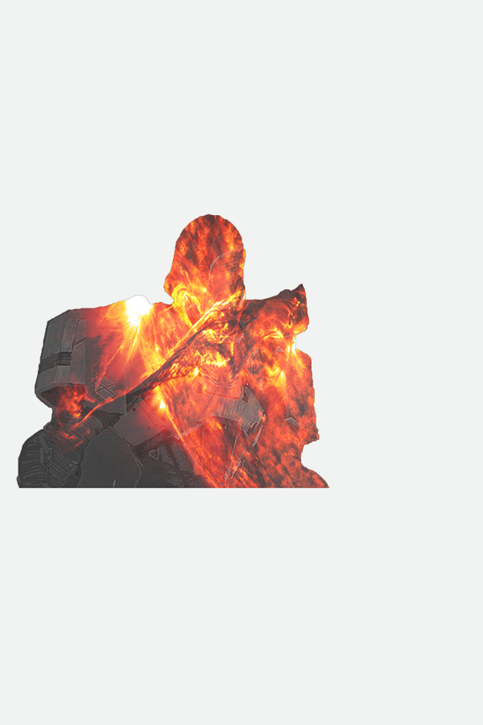
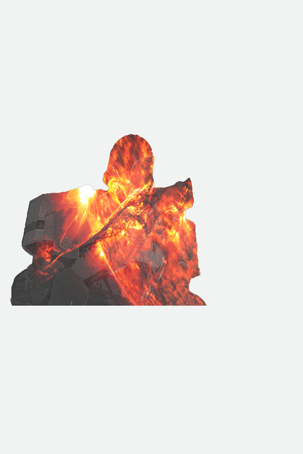

Double exposure is being taught in this tutorial and it allows an image to have another image displayed behind it. I found that this was not that difficult to do and still allowed for a cool effect.

 
Back to main page
Tutorial

Back to main page
Tutorial